Soni, Nara: things to do, food and stays
Soni · Nara
Soni
Highlighted on the Nara map.

Stay
民宿 ２・７（ツーセブン）
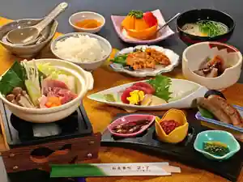
Minshuku 2 7(Tsusebun)
農林体験の宿 そに木霊リゾート 垰～ＴＡＷＡ～
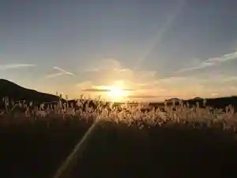
Norin Taiken No Yado Soni Kodama Resort Tao ~TAWA~
Resort hotel in Taromichi, Soni with a quiet countryside setting.
Dining
曽爾高原ファームガーデン
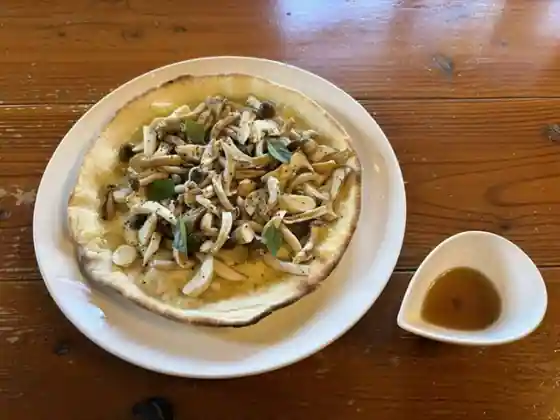
So Ji Kogen Famu Garden
黄色いのれん
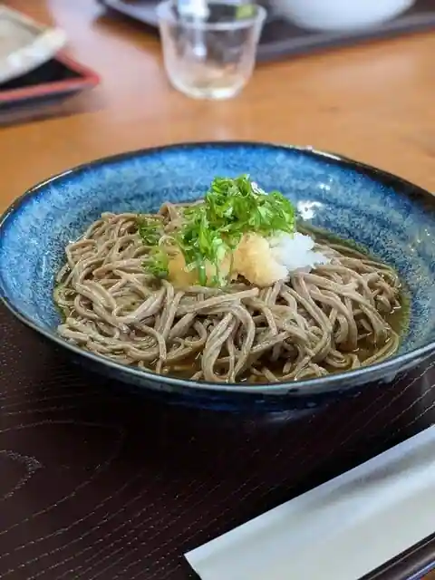
Kiroi Noren
お米の館
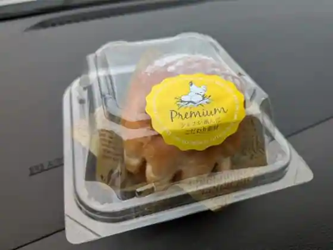
O Kome No Kan
お食事処 お亀庵
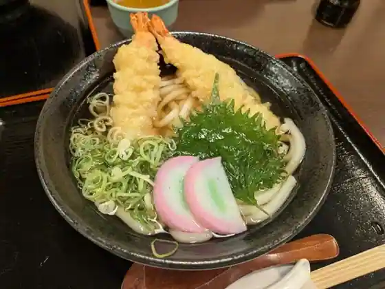
O Shokuji Tokoro O Kame Iori
豊栄
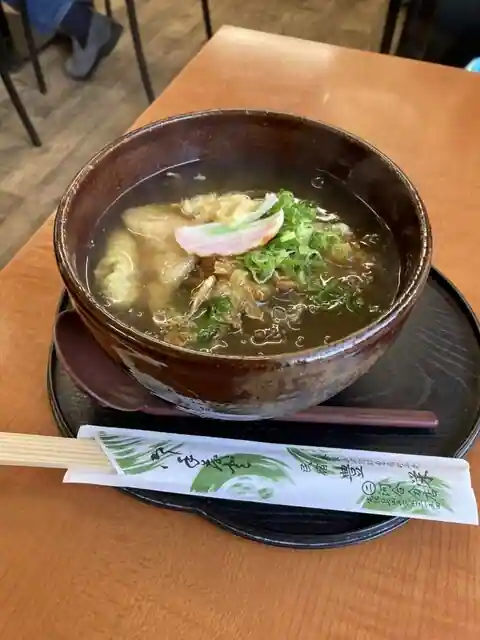
Toyosaka
お食事処 土井
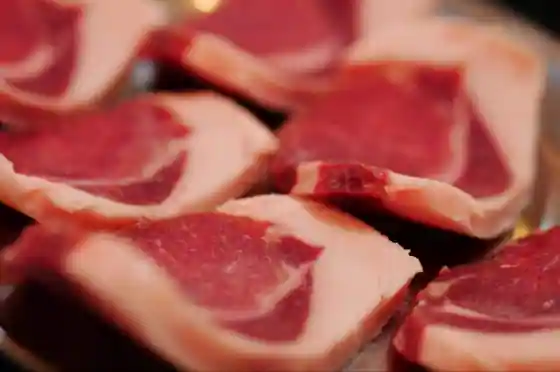
O Shokuji Tokoro Tsuchi
銭の花
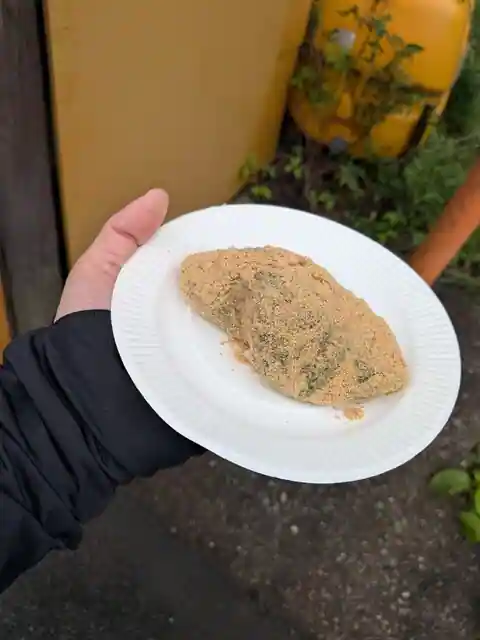
Sen No Hana
たけるのかまどのたまごかけごはん
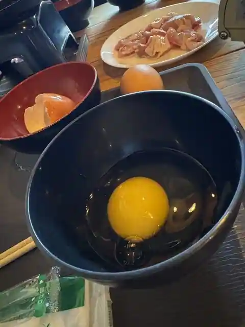
Takerunokamadonotamagokakegohan
ONIYUPOS
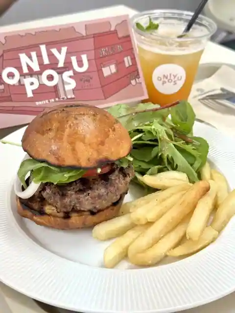
ONIYUPOS
民宿 木治屋
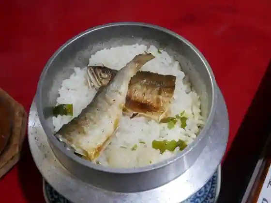
Minshuku Ki Osamu Ya
カフェ ねころん
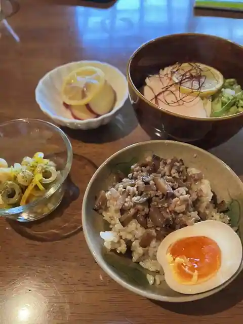
Cafe Nekoron
ひろ房
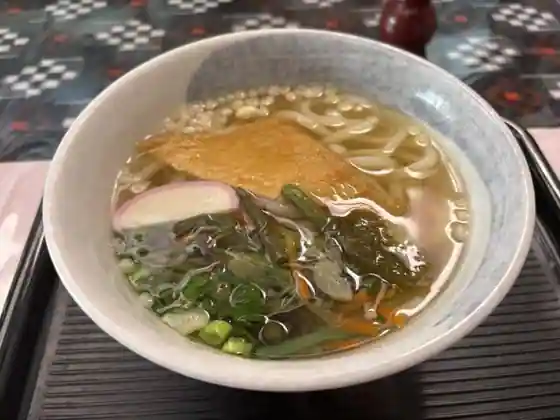
Hiro Bo
垰レストラン
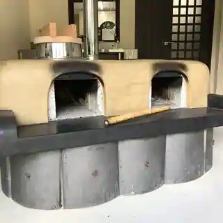
Tao Restaurant
べる りーそ
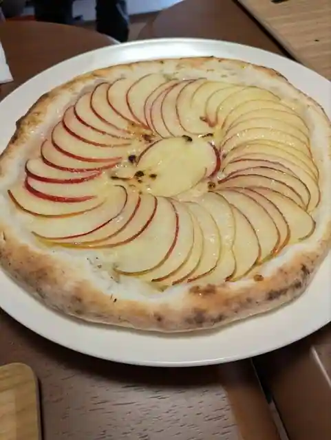
Beru Riso
森のオーベルジュ 星咲
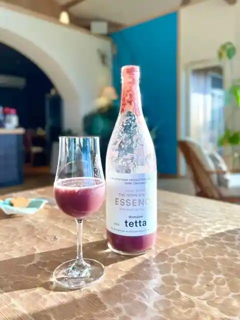
Mori No Oberuju Hoshi Saki
花あかり
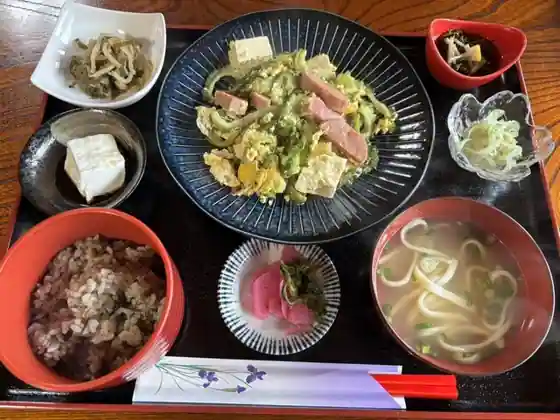
Hana Akari
仙女一休
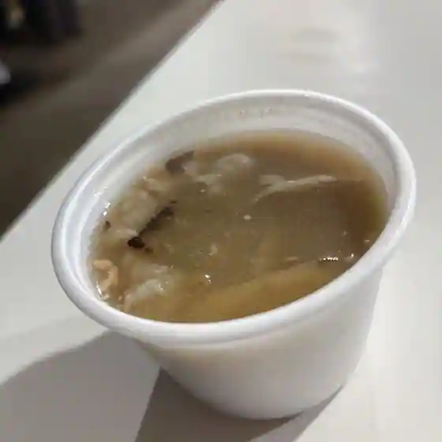
Senjo Ikkyu
お米パンのはぎはら
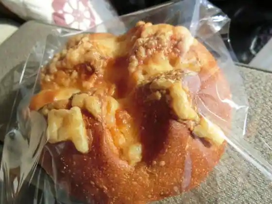
O Kome Bakery Nohagihara
壺焼き芋屋みっちゃん
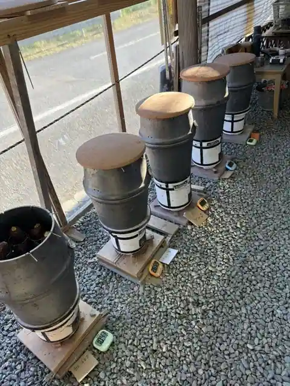
Tsubo Yaki Imo Ya Mitchan
貴のカレー
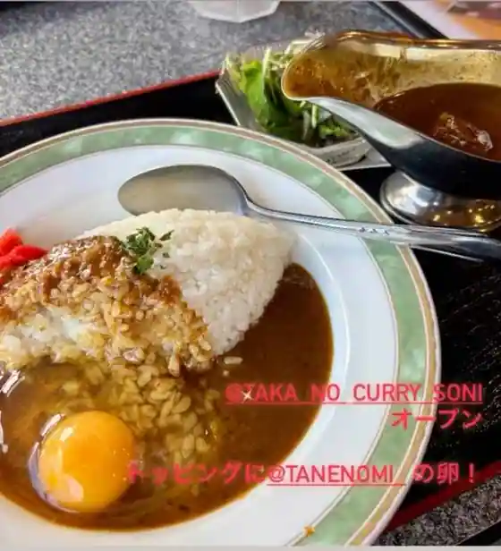
Takashi No Kare
Sights
San Birejji Soni (Oku Kyochi Oto Campground)
National Soni Seishonen Nature no Ie

Oku Kyochi Kei

Byobu Iwa Park

Soni Highlands

Soni Highlands Farm Garden
Sumi Jo Bo Falls
Hotaru Park
Yoroi Gaku
Mon Boku Shrine